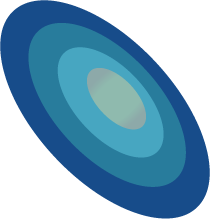
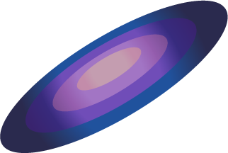

You are now visiting the Andromeda Galaxy. Andromeda is also a spiral galaxy, similar to the Milky Way, and is the closest galaxy to ours at 2 million lightyears away. Although that’s pretty far away, Andromeda is so bright that it can be seen in the night sky without a telescope. Look for the faint blob that is Andromeda between the constellations of Pegasus and Cassiopeia.

The Milky Way. Everyone you know is here.